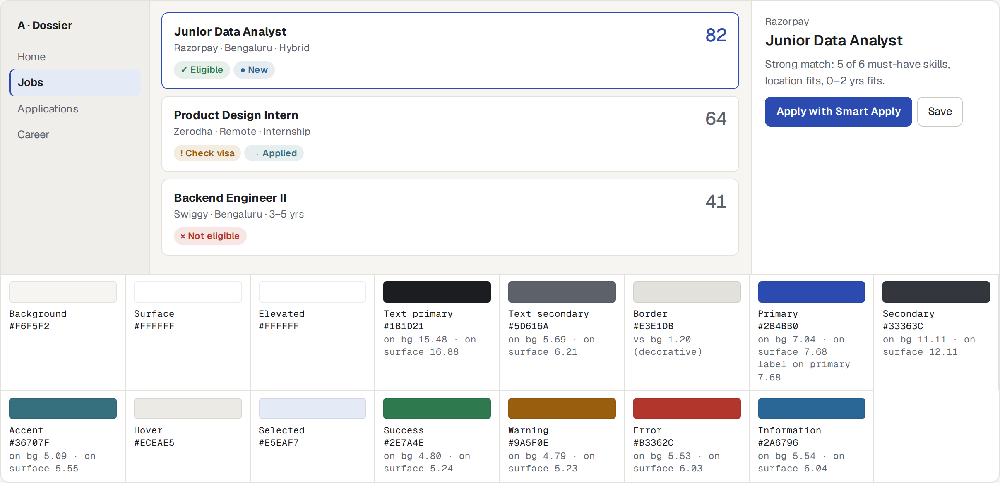
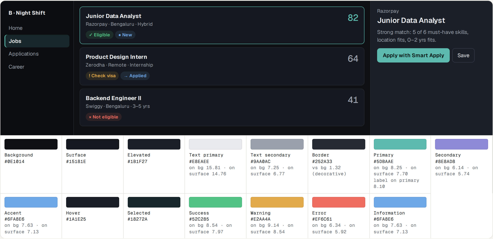
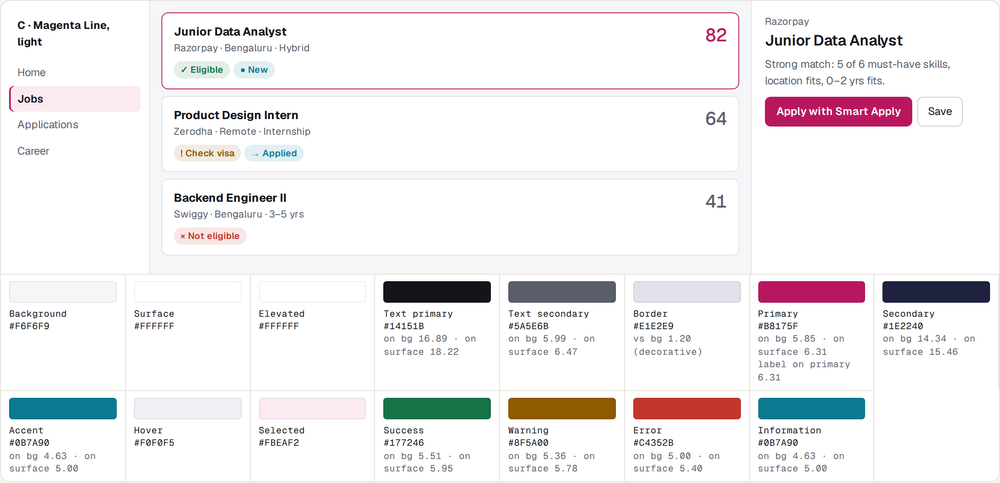
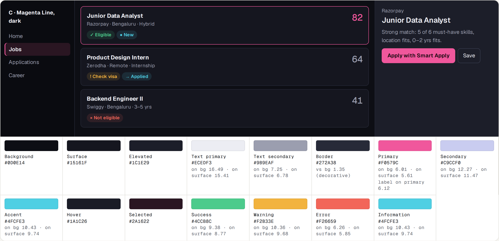
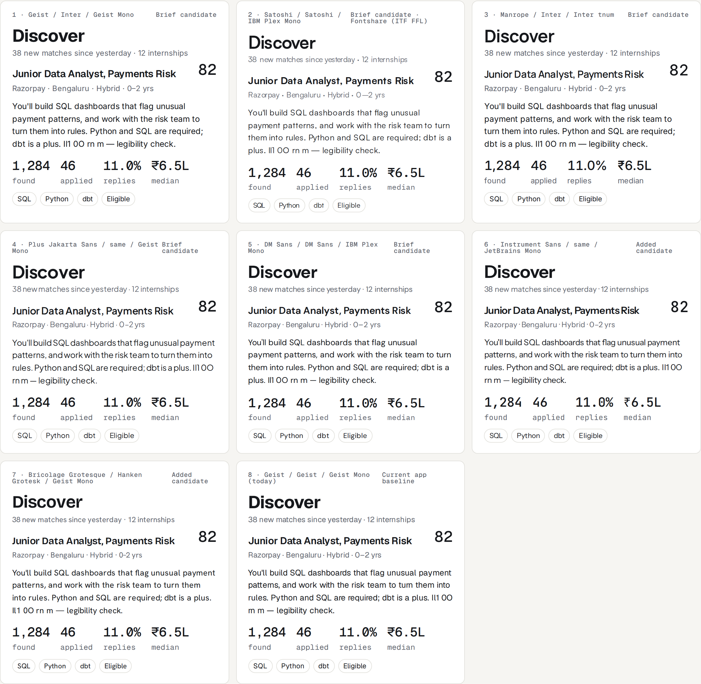

JobPilot · Redesign · Phase 1–3 research and audit · 18 Nov 2026
Making JobPilot feel like one product, from first search to signed offer
Design research on Refero, an audit of the current JobPilot web app, three visual directions, a simpler information architecture and a plan for local prototypes. Nothing in the app has been changed. This document is for review and a decision.
ResearchAuditDirectionsYour choicePrototype
Recommendation. Direction C, Magenta Line: each job's journey drawn as a route (found → saved → applied → interview → offer). It borrows the keyboard and command layer from direction B and the document-style job reading from direction A. The reasons are in section 9.
18reference flows studied on Refero, from 13 products
9distinct end-to-end flow types covered
12 → 4primary navigation items proposed, plus a footer group
0lines of app code changed; nothing committed or deployed
Contents
1
How the research was done, and its limits
2
Refero research report: 18 references, each with link, flow, techniques and the JobPilot problem it solves
3
Patterns worth keeping, sketched (my own drawings, not copies of the products)
4
JobPilot UX audit: issues, root causes, recommended changes, features that must survive
5
Three design directions: palettes with exact tokens, type, layout, motion, signature
6
Type study, status and match-score colours
7
Proposed information architecture, with every current page mapped
I browsed refero.design in Chrome without an account, opened each flow and stepped through its frames one by one. For each flow I noted the layout, navigation, states, copy and interaction patterns visible in the frames. I then read the JobPilot frontend source (routing, gates, tokens, fonts, Content Security Policy, state handling, keyboard shortcuts) and the Smart Apply state machine in the backend, without changing anything.
Fonts and colours were rendered, not guessed. A local lab page (design-lab/research/type-and-color.html) renders the same JobPilot content in eight font pairings and draws each palette on a Discover layout. It computes WCAG contrast live, and the images in section 6 come from it.
Limits you should know about
Free access shows about 3% of Refero, as its own banner says. Without signing in you get 8 screens and 8 flows per product, and opening a single screen needs an account. I did not create an account, because that needs your approval. With your Refero login I could cover much more.
Not in Refero as a product (searched, no product entry): Wellfound, Ramp, Superhuman, Notion. In Refero but no flows: Attio, Vercel (marketing screens only). Not reached in this pass: Otta / Welcome to the Jungle, Indeed, Greenhouse and Lever as job boards, Read.cv, Arc, Figma, Canva, Revolut, Raycast, Framer. LinkedIn screens exist but open only when signed in.
Motion could not be observed. Refero shows static frames, so no claim in this document says a product animates in a particular way. The motion system in section 8 is my proposal, to be tested in the prototype.
Responsive behaviour could not be observed. All the flows studied were desktop web captures.
No third-party screenshots are reproduced here. They belong to the products and to Refero. Every reference has its Refero link instead, and the patterns are redrawn as my own sketches.
Section 2 · Refero research report
18 references across 9 flow types
#
Product
Flow studied
Flow type
Solves for JobPilot
01
Linear
Assigning teammate to issue
Create with properties
Apply package as editable pills
02
Linear
Searching for shortcut keys
Command and navigation
Discoverable shortcuts
03
Missive
Searching for commands
Command and navigation
⌘K instead of 12 menu items
04
Contra
Signing up and onboarding
Onboarding
Live profile preview while typing
05
Intercom
Signing up and onboarding
Onboarding
One question per screen, inline validation
06
Teal
Signing up and onboarding
Onboarding / upload
Choose how to add your history
07
Stripe
Activating payments
Guided setup
Time estimate, saved progress, stepper
08
Stripe
Installing app
Integration install
Explicit "installed" end state
09
Mercury
Creating and applying a filter
Search and filter
Filters + saved views (merges Searches)
10
Mercury
Feedback on insight trends
Dashboard / insights
Reports that answer one question
11
Handshake
Submitting job application
Apply
Status lives on the job afterwards
12
Contra
Applying to job post
Job detail / apply
Grouped nav, sticky apply card
13
ElevenLabs (Ashby form)
Applying for open position
Employer form
What Smart Apply fills and detects
14
Teal
Managing the job tracker
Tracking pipeline
Stage strip, JD keyword highlights
15
Teal
Reordering resume sections
Document editing
Studio: edit beside live preview
16
Teal
Resume builder tour
First-run
Counter-example: 10-step tour
17
Parallel
Searching jobs
Job discovery
Counter-example: empty first view
18
Craft
Exporting PDF file
Document export
Inspector panel, inline export state
"Typography" below is what can be seen in the frames. Where a face can't be named with confidence, the entry says so. Motion and responsive behaviour are marked not observable for every entry (see limits).
Creating an issue is one compact dialog. Status, priority, assignee and label sit in a single row of pills, each editable in place through a popover. The assignee popover has search, grouped "Team members", an "Invite and assign" escape hatch and a hover card with the person's details.
Type
Neutral grotesque UI sans at small sizes, medium weight for the title field. Exact face not confirmed.
Colour
Near-white surfaces and grey chips. The only saturated colour is the indigo "Create issue" button.
Layout / nav
Sidebar grouped into Workspace / Your teams / Try, with collapsible headers. The dialog is centred over the list.
Interaction
Properties editable in place, a keyboard hint on the primary button (C), a "Create more" toggle for repeat entry.
Motion · responsive
Not observable (static frames).
Accessibility
Every pill carries a text label as well as an icon, so priority and status are not shown by colour alone.
JobPilot: replace the 3-step Apply dialog with one panel where resume, cover letter and screening answers are pills you can change in place.
Search opens with recent searches and scope tabs (All, Issues, Projects, Documents). Keyboard shortcuts live in a searchable side panel, and an empty search says plainly "No matching shortcuts found".
Type · colour
Same system as 01. The search panel is white on a dimmed workspace.
Layout / nav
The right side panel overlays the workspace without leaving the page.
Interaction
Shortcut discovery is searchable rather than a static cheat sheet.
Motion · responsive
Not observable.
Accessibility
The empty result is stated in text, and back navigation is visible in the panel header.
JobPilot: Discover's j/k/o/s/a/d shortcuts exist but nobody can find them. Add a "?" shortcut panel and scoped search.
One palette mixes actions (New draft, New task) with numbered shortcuts ⌘1 to ⌘9, deep settings as breadcrumb paths ("Settings → Rules → Create new rule") and scoped searches ("Search 'new' in contacts"). A footer legend teaches ↑↓, Return and Escape.
Type · colour
Compact sans. The selected row is solid blue with white text, and everything else is neutral.
Layout / nav
A centred floating palette over a three-pane mail layout.
Interaction
Typing filters actions, settings and search scopes together, and every result shows its shortcut.
Motion · responsive
Not observable.
Accessibility
Fully keyboard-driven, and the instructions are visible in the palette itself.
JobPilot: a ⌘K palette makes every page, settings tab and action (run discovery, add a job by link, Smart Apply setup) reachable without 12 menu items.
It asks "What brings you to Contra?" with two illustrated role cards, then "Build your profile · Step 1/2". The form sits on the left, and on the right a live profile card fills in as you type: name, skills, location, links. Counters (0/60 characters, 0/3 skills) show limits before you hit them, and photo upload opens a crop dialog.
Type
A large friendly sans headline over a compact form sans.
Colour
White, with a soft lavender gradient behind the testimonial panel and a black primary button.
Layout / nav
Split screen. Sign-up pairs a form with a testimonial, and the profile step pairs a form with a preview.
Interaction
Immediate preview, step count, counters, and a crop-on-upload dialog.
Motion · responsive
Not observable.
Accessibility
Visible labels and helper text sit under every field.
JobPilot: the "Review your profile" step should show the match profile employers and our scoring will see, updating live as you edit.
One question per screen ("Your full name", "Create your password"), with an example under the field ("Example: Jordan Quinn") and a thin progress line along the top edge. Inline validation reads "Password must be at least 10 characters", and Continue stays disabled until the field is valid.
Type
A plain sans with large field labels.
Colour
White form half and a full-bleed landscape painting on the other half. Black buttons, red only for errors.
Layout / nav
A 50/50 split, with Sign in top right as the only exit.
Interaction
Progressive: each answer unlocks the next screen.
Motion · responsive
Not observable.
Accessibility
The error is in text right under the field, not shown by colour alone.
JobPilot: registration and job preferences feel lighter at one decision per screen, with a visible progress line.
After sign-up, a single dialog asks "Choose how to add your career" with three tabs: Resume file, LinkedIn URL, Paste history. The drop zone states formats and size ("doc, docx or pdf, up to 10 MB"), and "Skip, add later" is always there.
Type · colour
A bold headline sans with a deep green brand field and a yellow primary button.
Layout / nav
A centred dialog on a full brand-colour background, so there is nothing else to click.
Interaction
Several equal ways to give the same information, and a skip that doesn't feel like failure.
Motion · responsive
Not observable.
Accessibility
File constraints are stated before upload, not after a failure.
JobPilot: the resume step offers Upload or Paste text alongside "Start without a resume". We would not add LinkedIn import, because LinkedIn scraping is off-limits.
An intro card answers the two questions people actually have, "What information will I need?" and "How long does it take? 5–10 minutes", and promises "Any progress you make will be saved". "Skip for now" sits next to the main button. The task itself opens in a full-screen focus mode with a vertical stepper (5 steps, sub-steps under the active one) and an "In progress" badge.
Type
Stripe's own sans: large semibold headings, comfortable body.
Colour
White and pale grey with Stripe indigo for active steps and buttons. Diagonal colour bands decorate the intro only.
Layout / nav
Stepper on the left, a single form column on the right, and a close button that keeps progress.
Interaction
Expectations set before starting, resumable, with sub-steps revealed only for the current step.
Motion · responsive
Not observable.
Accessibility
The stepper shows numbers and labels, not dots only.
JobPilot: onboarding and Smart Apply setup open with "what you'll need · about 3 minutes · progress is saved", then a labelled stepper.
An app page with a metadata column (Visible on, Works with, Pricing, Supported languages, Support) and one "Install app" button. Installing happens in a right-hand side sheet that ends on an unmistakable "Installation complete" state with a large check.
Type · colour
Stripe sans, indigo action, a green success check.
Layout / nav
A side sheet over the page, so you never lose where you came from.
Interaction
Install, then confirmation, in place.
Motion · responsive
Not observable.
Accessibility
Success is stated in words, not only by the icon.
JobPilot: Smart Apply setup ends on a verified "Connected · version 2.1.0" state. The app already checks this by pinging the extension.
Mercury · Creating and applying a filter to transactions
Common filters are one click away (Date, Keyword, Amount). Everything else is behind "Filters": a two-pane menu with facets on the left and searchable checkbox values on the right. Active filters become chips ("This week ×", "+2 more") with Reset, and "Create view" saves the combination as a named Data View. The summary numbers above the table follow the filter ("Net change this week").
Type
A neutral sans. Money uses smaller superscript cents, which keeps columns calm.
Colour
White and grey with an indigo accent for chips and buttons, green for incoming amounts, a red "Failed" tag.
Layout / nav
A labelled sidebar (Home, Tasks with a count badge, Transactions, Insights…) and a full-width table with sticky filters.
Interaction
Progressive disclosure: quick filters, then the full menu, then a saved view.
Motion · responsive
Not observable.
Accessibility
Status tags carry text ("Failed"), and filter counts are written out ("Filters (2)").
JobPilot: Discover keeps 3 quick filters visible and moves the rest behind "Filters". "Searches" becomes saved views inside Discover rather than a separate page.
Insights has three segments (Overview, Money in, Money out) and a date range with a mini timeline you can brush. Below that are one big number ($1.9M), its monthly average, and a single-series bar chart with the average drawn as a reference line. Written insight cards under the chart each have thumbs up and down.
Type · colour
Large tabular figures. Pale indigo bars and a dark average line, so only one thing is highlighted.
Layout / nav
The chart is the page, and the explanations sit right under it.
Interaction
Segment and date range are the only controls.
Motion · responsive
Not observable.
Accessibility
The key number is also written as text and doesn't need reading off the chart.
JobPilot: Reports becomes "Outcomes": one question per view (Are my applications getting replies?), one big number, one chart and plain-language notes.
The job page leads with "At a glance" (pay, remote, job type with dates, "US work authorization not required") before the description. "Apply to DesignLabs" lists the required documents and shows each attached one as a green confirmed row with "Preview document", plus a required work-authorization question. Afterwards the job page carries a persistent banner, "Applied on November 29, 2025 · Withdraw application", and Apply is disabled.
Type · colour
A clean sans, black primary, green only for confirmed states.
Layout / nav
A narrow left nav (Explore, Feed, Inbox / Jobs, Events, Employers) and a single reading column.
Interaction
A short modal, with the result shown where you'll look next time.
Motion · responsive
Not observable.
Accessibility
The success state is a sentence with a date, not just a colour.
JobPilot: eligibility facts go at the top of every job. After applying, the job shows its application state (Submitted · confirmed / Needs your confirmation) wherever it appears.
The job page has a sticky "Details" card on the right (budget, delivery time, Apply, tags, additional info) next to the description. The sidebar groups many destinations under small labels: Identity, Leads, Projects & payments. Applying asks you to pick at most 3 work samples ("quality over quantity", 0/3 selected).
Type · colour
A large bold job title, quiet body, black buttons, a soft gradient on the promo card only.
This is the employer side of our product. The Ashby form has "About the role" and "Application" tabs, and an "Autofill from resume" upload at the top. After submitting, a green "Success · Thank you for applying" banner appears, and the page says "Powered by Ashby".
Type · colour
The employer's brand on top of Ashby's neutral form system.
Layout / nav
A single column with breadcrumbs (Careers › Automations Engineer).
Interaction
Upload to prefill, then edit, then submit, then an in-page confirmation.
Motion · responsive
Not observable.
Accessibility
Required fields are marked with *, and success is written in words.
JobPilot: our extension fills exactly this form and detects that confirmation. The redesign shows "Submitted · confirmed by the employer's page" differently from "You said you submitted".
A chevron stage strip with counts (Bookmarked 3 → Applying → Applied → Interviewing → Negotiating → Accepted) heads the tracker table and doubles as a filter, and a follow-up date column is highlighted. Each job has its own stage bar, tabs (Job info, Notes, Resume, Check list, Practice interview) and a job description with your keywords highlighted, plus a hard-skills frequency list with an on/off toggle.
Type · colour
A compact sans and deep green brand, with mint highlights for matched keywords.
Layout / nav
A list of jobs on the left and the selected job on the right (master-detail).
Interaction
Sortable headers, group by, columns menu.
Motion · responsive
Not observable.
Accessibility
Stage names are written in the strip. The highlight colours are low-contrast, so don't copy those.
JobPilot: the Applications header becomes a stage strip with counts, and the match breakdown highlights your matched skills inside the job description.
Top tabs Preview, Design, Analysis (badge 9), Job Matching (badge), Cover Letter, Guidance. Under Design there are sub-tabs (Presentation, Sections, Settings, Advanced). "Section Order & Naming" shows the resume's two columns as draggable blocks, and the live preview on the right updates on drop. Export PDF is the one dark button, top right.
Type · colour
UI sans, with the resume rendered in its own template type. Green brand with red count badges.
Layout / nav
Editor on the left, paper preview on the right, at about equal width.
Interaction
Direct manipulation mirrored in the preview, and badges that point to work still to do.
Motion · responsive
Not observable.
Accessibility
Drag handles are visible. Keyboard reordering can't be checked from the frames.
JobPilot: Resume Studio becomes editor + live paper side by side. Check and suggestions become badge counts, not separate screens.
A "Ready to take control of your job search?" modal starts a 10-step coach-mark tour ("Next (2/10)"). Underneath, the useful part is that every accordion section has its own empty state and action ("No Work Experience added yet · Add Work Experience").
Lesson
Long tours ask people to memorise the interface before using it. Empty states that say what to do next teach in context.
JobPilot: no product tour. Every empty state names the next action, and a one-line hint appears the first time a feature is used.
A centred search field with a filter button, scope pills (All, Jobs, Startups, Collections) and category tabs. Before you search, the page says "No Results · Broaden your search or come back soon!" After searching, "Jobs (398)" lists cards with salary, applicant avatars, a save heart and "Apply Direct".
Lesson
A job product should never open empty. A count in the heading ("Jobs (398)") is a good, quiet way to show scale.
JobPilot: Discover opens on your ranked matches, never on a blank search. Its heading carries the count and freshness ("38 new since yesterday").
Three panes: table of contents on the left, the page as paper in the middle, and an inspector on the right with tabs (Insert, Format, Style, Info), page properties and actions. Export shows a small inline card, "Exporting to PDF", over the document instead of a blocking dialog.
Type · colour
Document type in the centre, quiet UI type around it. Blue only for Shared and links.
Layout / nav
Outline, document, inspector: each pane has one job.
Interaction
Context-sensitive inspector tabs and non-blocking progress.
Motion · responsive
Not observable.
Accessibility
The progress state carries a text label.
JobPilot: in Resume Studio, Content, Design, Check, Suggestions and History become inspector tabs. Export to PDF/Word shows inline progress and a "Downloaded" state.
Section 3 · Patterns worth keeping
Eight patterns, redrawn for JobPilot
These are my own wireframes showing how each pattern would work with JobPilot content. Magenta marks the part that matters.
Grouped sidebar + ⌘KContra's labelled groups, with Missive's and Linear's palette reaching every page, setting and action. Refs 03, 12.Quick filters, full filter menu, saved viewsThree common filters stay visible, the rest sit behind one button, and "Save as view" replaces the separate Searches page. Ref 09.List, reading pane and sticky apply cardHandshake's "At a glance", Teal's keyword highlights and Contra's sticky card, so the "why it matches" sits next to Apply. Refs 11, 12, 14.Apply as a live route of statesHandshake's persistent status plus Ashby's real confirmation page. Each backend state becomes a visible step, and "uncertain" gets its own branch. Refs 11, 13.
Stage strip that filtersTeal's pipeline header as counts that double as filters. The board remains available for drag and drop. Ref 14.Guided setup that checks itselfStripe's time estimate and stepper. Steps 2 and 3 tick themselves off using the extension's existing ping, and the most common error has a fix ready. Refs 07, 08.Outline, paper, inspectorCraft's three panes and Teal's live preview: the section being edited is tinted on the paper, and Check becomes a badge count, not a tab you have to visit. Refs 15, 18.One question, one number, one chartMercury Insights' structure for Reports, with the plain-language takeaway under the chart. Ref 10.
index.css holds the stock shadcn neutral palette: every colour is grey (OKLCH chroma 0), and only the dark sidebar has a blue. No tokens exist for status, match score, success or warning, so pages hand-pick Tailwind colours.
Fonts
Geist Variable only, self-hosted via Fontsource. No monospace or numeric face, and no type scale tokens.
Motion
tw-animate-css utility classes only. No motion tokens and no shared reduced-motion handling.
Security constraint
The Content Security Policy allows style-src 'self' and font-src 'self'. Fonts must be self-hosted (no Google Fonts CDN), and libraries that inject <style> tags break; Base UI's are already switched off. Any motion library must be checked against this.
Entry gates
BackendGate → RequireAuth → RequireOnboarded are nested, and each waits for its own request with its own full-screen message ("Connecting…", "Restoring your session…", setup check).
Navigation
12 flat sidebar items, plus My mentees (mentor) and Admin Console (admin). No grouping, no search, no command menu.
Shortcuts
Discover has j/k/o/s/a/d, and Studio has editor keys. Neither is discoverable in the interface.
Apply state
The backend tracks 12 Smart Apply states (draft, ready_to_fill, filling, needs_information, ready_for_review, reviewed, submission_authorized, submission_pending, submitted_confirmed, submission_uncertain, failed, cancelled). The web app shows a 3-step dialog and a status line, so most of this already-available truth is invisible.
Size
About 6,200 lines across pages, app components and layout. The biggest are Applications (604), Admin (433), Searches (391), Discover (366) and forms (358).
Issues, root causes, recommended changes
Problem
Root cause
Recommended change
1 · 12 nav items
Every backend feature got its own page. Related things (Saved vs Discover, Searches vs Run discovery, Gaps vs Mentor plan, Interview prep in two places) were never grouped.
4 primary areas plus a footer group, a ⌘K command menu and in-page tabs (section 7).
2 · Three loading screens
Three nested route guards, each awaiting its own request in sequence, each with its own full-screen message.
One entry: draw the app shell and skeleton immediately and run the health, session and setup checks in parallel. Only a real failure gets a screen: offline, with Retry and the cause.
3 · Cluttered Discover
Producing jobs (Run discovery, Search links, Add job, the status card) shares the page with reading them. All filters sit at one level.
The first job card is visible without scrolling. One search row with 3 quick filters and "Filters (n)". Discovery status becomes a one-line indicator, and add/run/links move to a "+" menu and ⌘K.
4 · Fragmented apply
The web app can't see the employer tab; truth arrives through the extension and the backend. The interface shows steps, not states.
One Apply panel showing the live state route (sketch 4). The app re-checks state on focus and while a session is open. Uncertain and failed states each get a recovery path.
5 · Resume and profile in 3 places
Setup, Settings › Resume & profile and Resume Studio each edit their own slice with different forms.
One model: Profile (facts) → Resumes (documents made from it) → Answers (verified screening answers), all under Career › Profile. Onboarding and Settings link there.
6 · Extension install
Not on the Chrome Web Store, so the user must unzip, turn on Developer mode, Load unpacked, pin and enter a code.
A guided setup that detects each step through the existing ping, troubleshoots the "manifest missing" error and ends on "Connected". The real fix is Web Store publishing, which isn't frontend work.
Job detail: dates, eligibility check, original listing, continue application, interview prep, tailor resume, match breakdown, full description, qualifications, responsibilities
Apply: checklist, screening answers, resume picker, cover letter, Smart Apply status (ready / connect / get it), one-click fill on Greenhouse, Lever and Ashby, manual "Open listing", outcome confirmation with reference number, Back to package, auto-detect of a confirmed submission
Searches: saved searches, search links, run discovery, add a job, company watchlist, directory, suggestions, add by careers URL, source health
Settings: verified answers, career goals, platforms, extension download and connection code, privacy and consent, account and connection
Admin: users, invites, audit log, ops health
Light and dark theme, mobile menu
Section 5 · Three design directions
A · Dossier (editorial light)
Personality: a calm reading room for careful applicants. Each job is treated as a document worth reading properly.
Layout. A grouped, labelled sidebar (240 px), a narrow list of compact job rows (380 px) and a wide reading pane set like a document (68-character measure) with "At a glance" facts and a sticky apply card in the margin. Applications is a ledger table with a stage strip. Studio is a centred paper page with an outline on the left and an inspector on the right.
Type. Instrument Sans for display (20 px and up, tight tracking) with Inter for all interface and reading text; Inter's tabular figures handle numbers. That's two families.
Motion. Quiet: opacity plus 4–8 px slides, 160–220 ms, no scaling or bounce.
Signature. The reading pane. Your matched skills are underlined inside the job description, and short margin notes explain the score.
Risk. Warm off-white is close to a common AI look. The cobalt accent and the absence of a serif keep it apart.

B · Night Shift (midnight professional)
Personality: a cockpit for heavy job hunters who triage 50 jobs in a sitting, mostly by keyboard.
Layout. A 56 px icon rail and the ⌘K palette as the main way around. A full-width dense list (36 px rows) with inline key hints. A right inspector (400 px) toggled with Space. A bottom status bar shows discovery progress and the Smart Apply connection, like an editor's status bar.
Type. Geist with Geist Mono for scores, dates and shortcuts. Both are already installed, so there's no new font cost.
Motion. Crisp, 100–160 ms. The selection indicator slides between rows, and nothing moves for decoration.
Signature. The status bar and multi-select commands ("Save 5 jobs", "Dismiss selected").
Risk. A dark-only interface tires people during long reading and resume editing. It needs a light variant, which doubles token work.

C · Magenta Line (modern signature) · recommended
The idea. On an aircraft's navigation display, the active route is drawn as a magenta line ("follow the magenta line" is pilots' shorthand for flying the plan). The product is called JobPilot, so every job's journey becomes a route: Found → Saved → Ready → Applied → Screening → Interview → Offer. The colours follow cockpit conventions, which gives each one a fixed meaning: magenta · your active route and main actioncyan · selected, informationgreen · confirmedamber · needs youred · failed
Layout. A grouped sidebar (232 px: Home, Jobs, Applications, Career, plus a footer group). Home is a "flight plan" showing the next three things to do. Jobs has a single search row, list and detail side by side, and a route strip on every job showing where it is in your journey. Apply is a right-hand route panel with live states. The Applications board's columns are waypoints joined by the line.
Type. Satoshi for display and headings (character, used with restraint), Hanken Grotesk for reading and interface text (very legible at 13–14 px in the lab), IBM Plex Mono for "readouts" (scores, counts, dates). Three families, each with one job.
Motion. The one memorable move is the route line drawing to the next waypoint when a job progresses (320 ms). Everything else is 120–220 ms and quiet.
Risk. Magenta reads as "pink consumer" if overused. It is reserved for the route and the single primary action, under about 5% of the pixels on any screen.


Exact tokens (hex) for all three palettes
Contrast ratios were computed in the lab page. Every text-bearing token reaches 4.5:1 or more on both background and surface. Three values were darkened after the first render failed: A accent, C success and C warning.
Token
A · Dossier
B · Night Shift
C · light
C · dark
Background
#F6F5F2
#0E1014
#F6F6F9
#0D0E14
Surface
#FFFFFF
#15181E
#FFFFFF
#15161F
Elevated surface
#FFFFFF + shadow
#1B1F27
#FFFFFF + shadow
#1C1E29
Text primary
#1B1D21
#E8EAEE
#14151B
#ECEDF3
Text secondary
#5D616A
#9AA0AC
#5A5E6B
#9B9EAF
Border
#E3E1DB
#252A33
#E1E2E9
#272A38
Border strong
#CBC8C0
#353B47
#C9CBD6
#383C4E
Primary
#2B4BB0
#5DBAAE
#B8175F
#F0579C
On primary
#FFFFFF
#0B1412
#FFFFFF
#16070E
Secondary
#33363C
#8E8AD8
#1E2240
#C9CCF0
Accent
#36707F
#6FA8E6
#0B7A90
#4FCFE3
Hover
#ECEAE5
#1A1E25
#F0F0F5
#1A1C26
Selected
#E5EAF7
#18272A
#FBEAF2
#2A1622
Success
#2E7A4E
#52C285
#177246
#4CCB8C
Warning
#9A5F0E
#E2AA4A
#8F5A00
#F2B33E
Error
#B3362C
#EF6C61
#C4352B
#F26659
Information
#2A6796
#6FA8E6
#0B7A90
#4FCFE3
Section 6 · Type study
Eight pairings, same content, rendered

Pairing
What the render showed
Licence / hosting
Verdict
1 Geist / Inter
Very legible, neutral. Two near-identical sans faces is redundant.
OFL · Fontsource
Use one or the other
2 Satoshi
The most character in headings. Body at 14 px is fine but slightly airy.
ITF Free Font License · not on Fontsource, files must be vendored; check the licence terms before shipping
Display in C
3 Manrope / Inter
Wide headings that take space in dense lists.
OFL · Fontsource
Fallback display for C
4 Plus Jakarta
Tight word spacing at 13 px made meta lines run together.
OFL · Fontsource
Rejected for dense UI
5 DM Sans / Plex Mono
Friendly and readable. Plex Mono numbers are distinctive.
OFL · Fontsource
Plex Mono kept for C
6 Instrument Sans
Editorial headings, but cramped in small meta lines.
OFL · Fontsource
Display only, in A
7 Bricolage / Hanken
Hanken body was the most comfortable small text. Bricolage looked plain at this weight.
OFL · Fontsource
Hanken body in C
8 Geist (today)
Clean and technical, but the most familiar "developer tool" look.
OFL · installed
Used in B
Type scale (all directions)
Display 32/36 −2% · H1 24/30 −1.5% · H2 19/26 −1% · H3 16/22 · Body 14/22 · Small 13/20 · Caption 12/16 +1% · Readout 13–28, tabular figures. Weights: 400 body · 500 UI labels · 600 headings · 700 display. Above 640 px, Display steps up to 36.
Status and match-score colours
The same meanings in every direction. Each state always pairs colour with an icon and a word, never colour alone. A rejection is not shown as an error: it is grey, because it isn't something the user did wrong.
State (user-facing word)
Backend state
Colour role
Icon
New
discovered, unopened
Information
dot
Saved
saved
Secondary
bookmark
Ready to apply
draft, ready_to_fill, ready_for_review, reviewed
Information
check-list
Applying · filling the form
filling
Primary (active route), gentle pulse
route
Needs you
needs_information, submission_authorized
Warning
hand
Submitting
submission_pending
Primary
spinner
Submitted · confirmed
submitted_confirmed
Success
check
Did you submit it?
submission_uncertain
Warning
question
Didn't finish
failed
Error
alert
Cancelled
cancelled
Neutral
x
Screening · Assessment · Interview
pipeline stages
Primary for the current stage, neutral for the rest
waypoint
Offer
offer
Success
star
Not selected · Withdrawn
rejected, withdrawn
Neutral grey
minus
Match score
A score is a number and a word, with the reason next to it ("5 of 6 must-have skills"). It uses steps of the primary hue only, so it never competes with the status colours.
80–100 · Strong match
65–79 · Good match
50–64 · Partial
0–49 · Weak
Not eligible · sorted last
Shown with direction C values. A and B use the same four steps of their own primary colour. The score label text always sits on a surface at 4.5:1 or more; the tints above are fills, not text colours.
Section 7 · Information architecture
From 12 flat items to 4 areas, a footer and ⌘K
I checked the suggested grouping (Home · Explore Jobs · Applications · Career Studio · Insights · Settings) against the routes and against what users do. One change: Insights is not a top-level area. Reports are about application outcomes, so they live in Applications › Outcomes, and Home carries the 30-day summary. That saves a primary item. Promoting it back later is easy.
Primary Home Jobs Applications Career
Footer Settings My mentees (mentors) Admin (admins) Account menu · theme
Everywhere ⌘K command menu Notifications bell "?" shortcut sheet
Today
Route
Moves to
Why
Dashboard
/dashboard
Home
Opens on what to do next, not totals
Discover jobs
/discover
Jobs › Matches (Jobs | Internships)
The main daily task
Saved
/saved
Jobs › Saved
A view of the same list
Searches & sources › Searches
/searches
Jobs › Saved views
Mercury's "save as view"
Searches & sources › Companies
/searches
Jobs › Companies
Watchlist next to the jobs
Searches & sources › Sources
/searches
Discovery status popover + Settings › Job sources
Rarely needed, visible when broken
Run discovery · Search links · Add job
/discover
Jobs "+" menu and ⌘K
Producing jobs, not reading them
Applications
/applied
Applications › List | Board | Needs confirmation
Unchanged role
Reports
/reports
Applications › Outcomes
Reports describe outcomes
Interview prep
/interview-prep
Inside each application + Career › Interview practice
Prep is per job; practice is general
Resume Studio
/studio
Career › Resumes
Documents made from your profile
Settings › Resume & profile, Career goals, Verified answers
/settings
Career › Profile
One profile, edited in one place
Gaps & learning
/career
Career › Skills & learning
Same area as the plan
Mentor & plan
/mentor
Career › Plan & mentor
Plan uses the gaps
International
/international
Career › Work abroad
A career option, not a daily page
Settings › Job preferences, Platforms
/settings
Jobs › Preferences
Changes what Jobs shows
Settings › Browser extension
/settings
Settings › Smart Apply (also from Apply)
Setup is rare; status is shown in Apply
Settings › Alert emails, Notifications
/settings
Settings › Notifications
Merge two tabs
Settings › Privacy, Account & connection
/settings
Settings › Account & privacy
Rare, together
My mentees · Admin Console
/mentoring · /admin
Footer group, by role
Role-specific
Every old URL keeps working through a redirect inside the HashRouter, so bookmarks, guide links and alert-email links don't break. No backend endpoint changes.
Section 8 · Flow redesign plan
Order of work, and what to measure
#
Flow
Change
How we'll know (target, to be measured)
1
H · Returning user / entry
Shell first, parallel checks, Home opens on "continue where you left off"
One loading state instead of three. App shell visible in under 300 ms on a warm load.
2
B · Discover
Single search row, quick filters, saved views, list and detail
First job card visible without scrolling at 1366×768. Save or dismiss in 1 key or 1 click.
3
C · Apply
One route panel with live states and recovery paths
From job to "form filling" in 2 clicks when Smart Apply is connected. Every backend state has a visible label.
4
G · Smart Apply setup
Self-checking stepper and troubleshooting
Steps 2 and 3 tick themselves. "Manifest missing" has a one-screen fix.
5
D · Tracking
Stage strip, list, board, detail with interviews and prep
The next action and follow-up date visible per row.
6
E · Resume Studio + Profile
Outline, paper, inspector, and one Profile
Profile edited in one place. Check issues shown as counts.
7
A · First-time user
Expectations card, one decision per screen, live profile preview, first matches
Sign-up to first match list in under 5 minutes.
8
F · Career readiness + mentor, abroad, reports, admin
Re-skin on the new tokens and tabs
Every page in one visual family.
Each flow will be designed with default, loading, empty, success, error, partial and recovery states, back navigation, keyboard access, and desktop plus mobile (375 px) layouts. The targets are hypotheses to check in the prototype; no improvement is claimed until it's tested.
Technical constraints the design respects
The web app cannot see the employer's tab. Apply state arrives from the extension through the backend. The panel refreshes on window focus and polls while a session is open, using the existing endpoints.
Smart Apply never submits on its own. The user ticks "I have reviewed" and clicks Submit in the extension panel. The design says so plainly instead of hiding it.
One-click fill works only on Greenhouse, Lever and Ashby forms. Other sites get "Open the form" and manual confirmation. LinkedIn, Naukri and Indeed are never automated.
Developer-mode install remains until the extension is on the Chrome Web Store. The setup design can't skip Chrome's own steps.
The CSP requires self-hosted fonts and forbids injected style tags, so libraries must be checked before use.
Frontend only: every grouping uses data the current API already returns.
Motion system (direction C values)
Tokens: fast 120 ms · base 200 ms · large 280 ms · route 320 ms; easing standard cubic-bezier(.2,0,0,1) · exit cubic-bezier(.4,0,1,1) · route cubic-bezier(.65,0,.35,1). Only transform and opacity animate, except the route line (stroke-dashoffset). With reduced motion on, every row falls back as listed. Plain CSS transitions cover nearly everything. A small motion library is considered only for board drag reflow (see section 9).
#
Trigger
From → to
Time · easing
Property
Purpose
Reduced motion
1
App launch
Shell skeleton → content
160 · standard
opacity
No blank screen
Instant
2
Navigation
Old page out, new page y+4 → 0
80 out / 180 in
opacity, transform
Show the page changed
Instant
3
Sidebar collapse
232 → 64 px, labels fade
200 / 120
grid columns, opacity
Keep orientation
Instant
4
Search focus
Ring on; suggestions scale .98 → 1
120 / 140
box-shadow, opacity, transform
Focus is obvious
Opacity only
5
Filter menu
Panel opens downward
200 · standard
opacity, transform
Shows where filters came from
Opacity only
6
Job card hover
Surface → hover tint, border darkens
100
background, border
Clickable feedback, no lift
Same
7
Job selection
Selection bar slides to the row
180 · standard
transform
Track keyboard focus
Jumps
8
Open job details
Pane x+16 → 0
220 · standard
opacity, transform
Detail belongs to the row
Opacity 120
9
Save a job
Bookmark fills, 1 → 1.12 → 1, toast with Undo
160
transform, fill
Confirms without a dialog
Fill only
10
Start applying
Button label crossfades, route panel slides in
150 / 280
opacity, transform
Same action, next state
Opacity
11
Apply step change
Route line draws to the next waypoint, content crossfades
320 route / 180
stroke-dashoffset, opacity
Signature: progress is visible
Line jumps
12
Submitted
Waypoint fills, check draws, banner appears
240 / 200
stroke, opacity
Unmistakable success, no confetti
Static
13
Waiting on extension
Active waypoint opacity .5 ↔ 1
1600 loop, stops after 30 s
opacity
Something is in progress
Static dot + "Waiting"
14
Board drag
Card scale 1.02 + shadow, others reflow
120 / 200
transform
Where the card will land
No scale, instant reflow
15
Resume preview update
Changed block tinted, tint fades
600
background
Shows what changed
1 s static outline
16
Tab change
Underline slides, panel crossfades
180 / 120
transform, opacity
Continuity
Instant
17
Dialog open / close
Scale .98 → 1, y 4 → 0; reverse on close
200 in / 140 out
opacity, transform
Layering
Opacity
18
Notification / toast
y 8 → 0, stack shifts
200
opacity, transform
Noticed, not alarming
Opacity
19
Empty state
No animation
–
–
The next action is the focus
–
20
Loading / error
Skeleton appears only after 400 ms; error text fades in, no shake
150
opacity
Honest waiting, no flash
Static skeleton
Section 9 · Local preview plan
How the prototypes will be built and reviewed
Where: a separate design-lab/ folder beside the app, with its own small Vite + React + Tailwind project in design-lab/prototypes/. It imports nothing from frontend/src and writes nothing there.
What: clickable prototypes of the six required screens (workspace and navigation, Discover, job detail, Apply with all its states, application pipeline, Resume Studio) for the chosen direction, then the other two if you want them compared. Realistic sample data lives only in the prototype.
Review: run one command, open http://127.0.0.1:5199 on this machine, and switch direction, light/dark and reduced motion from a small toolbar. I'll also send screenshots and short recordings of each flow.
Motion library: CSS transitions first. Motion for React (its LazyMotion build) is considered only for board drag reflow, and only if it passes the CSP check in the prototype.
Protection: no commits, no pushes, no deploys and no change to the live app or its database. The existing app keeps running untouched. The folder is untracked and can be deleted in one step.
Why direction C is recommended
Criterion
A · Dossier
B · Night Shift
C · Magenta Line
Originality
Medium: editorial light is a familiar look
Medium: the dark dev-tool look is common
High: the route concept is specific to JobPilot
Visual refinement
High
High
High (if magenta stays rare)
Readability
Best for long job descriptions
Weaker for long reading
Good (Hanken body)
Workflow efficiency
Good
Best for keyboard triage
Good, plus B's ⌘K layer
Status clarity
Good
Good
Best: maps directly onto the 12 apply states
Accessibility
All tokens ≥ 4.5:1
All tokens ≥ 4.5:1
All tokens ≥ 4.5:1, light and dark
Implementation cost
Medium (2 new fonts)
Lowest (fonts installed)
Medium (3 fonts, one needs a licence check)
Expected performance
Similar for all three: transform and opacity motion, self-hosted variable fonts. To be measured in the prototype, not assumed.
Approval gate
Which visual direction would you like me to prototype first?
A · Dossier · B · Night Shift · C · Magenta Line (recommended), or a mix (for example C's identity with A's reading pane). Nothing will be built until you choose.